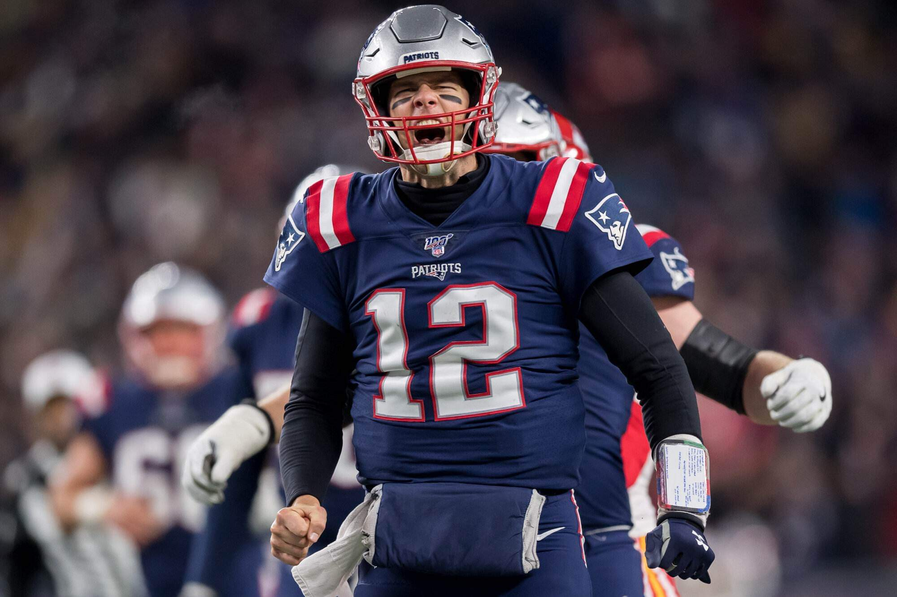

The History of the Patriots
When you think of the Patriots, Tom Brady is the first person that springs to mind. Brady, who is widely considered the best quarterback of all time, guided the team to six Super Bowl titles and numerous other achievements. His career with the Patriots cemented his position in NFL history, and his partnership with Bill Belichick is legendary. Brady was the team's face for twenty years because of his leadership, competitiveness, and capacity to perform well under duress.
Rob Gronkowski, who goes by "Gronk," is another important character. He was a formidable presence on the field as a tight end, both as a blocker and a receiver. Gronkowski was a fan favorite because of his exuberant demeanor and unrivaled chemistry with Brady. Long-lasting effects were also left by players like Vince Wilfork, a pillar of their defense, and Julian Edelman, who was renowned for his clutch playoff heroics.
On defense, you can't overlook players like Rodney Harrison and Tedy Bruschi, who played a key role in the early 2000s dynasty. Players like Stephon Gilmore and Devin McCourty have continued the tradition in more recent years. Finding and nurturing talent has always been a strength of the Patriots, and it's a major factor in their success.
